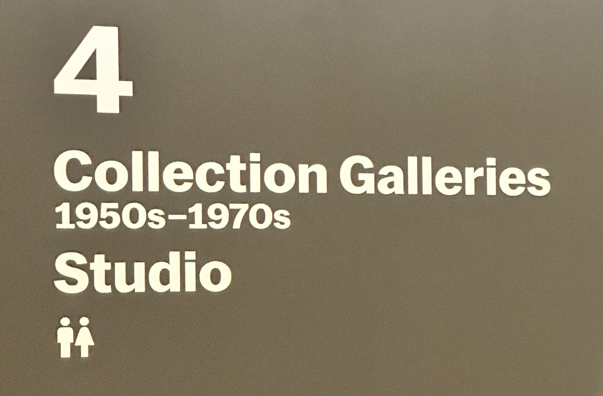
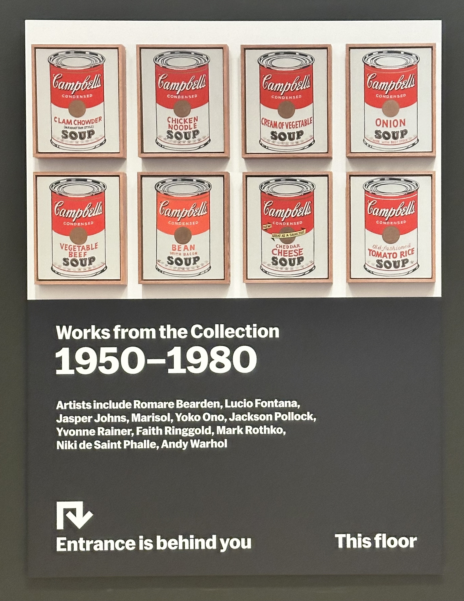
Artists include Romare Bearden, Lucio Fontana, Jasper Johns, Marisol, Yoko Ono, Jackson Pollock, Yvonne Rainer, Faith Ringgold, Mark Rothko, Niki de Saint Phalle, Andy Warhol
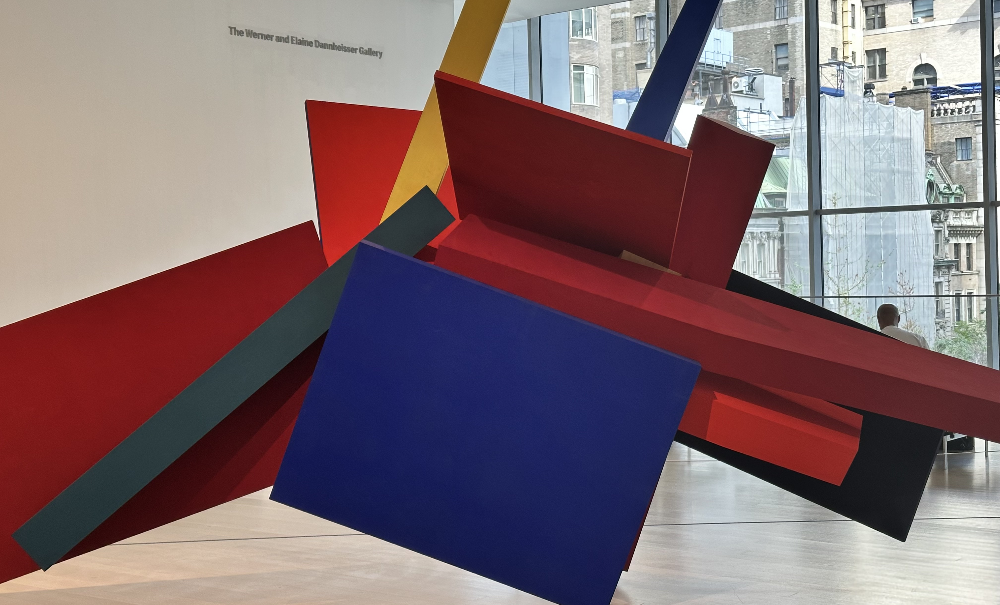
|
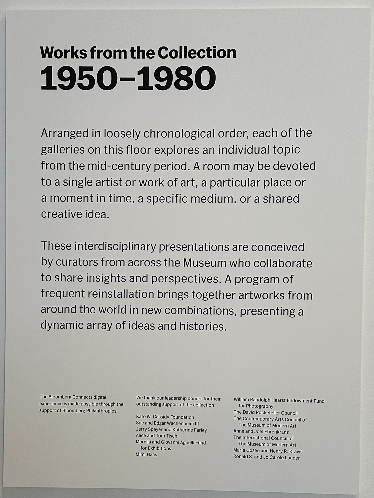 |
1950-1980 Arranged in loosely chronological order, each of the galleries on this floor explores an individual topic from the mid-century period. A room may be devoted to a single artist or work of art, a particular place or a moment in time, a specific medium, or a shared creative idea. These interdisciplinary presentations are conceived by curators from across the Museum who collaborate to share insights and perspectives. A program of frequent reinstallation brings together artworks from around the world in new combinations, presenting a dynamic array of ideas and histories. |
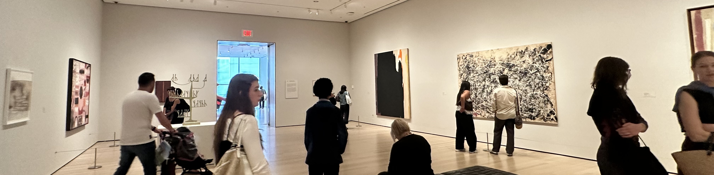
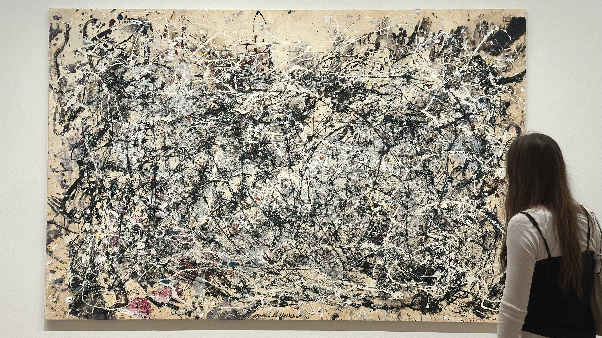
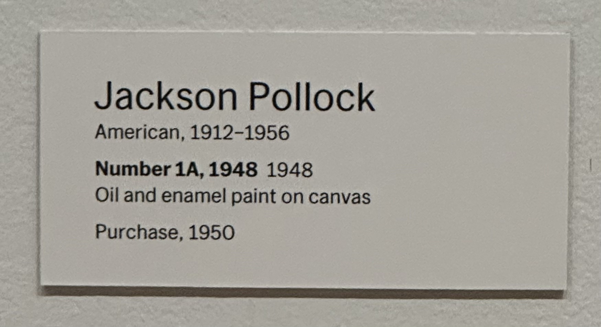
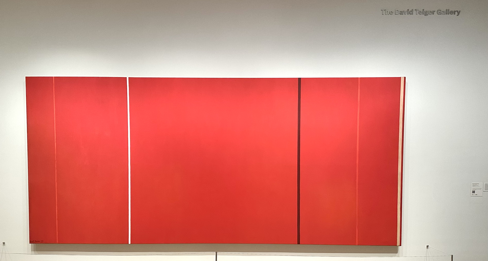
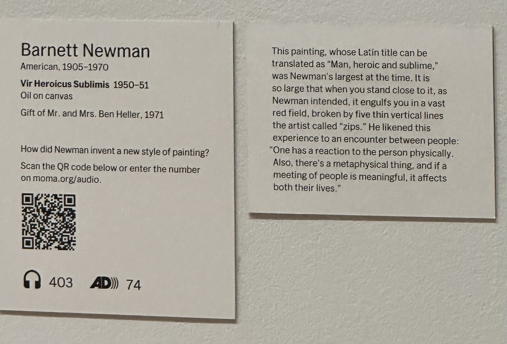
|
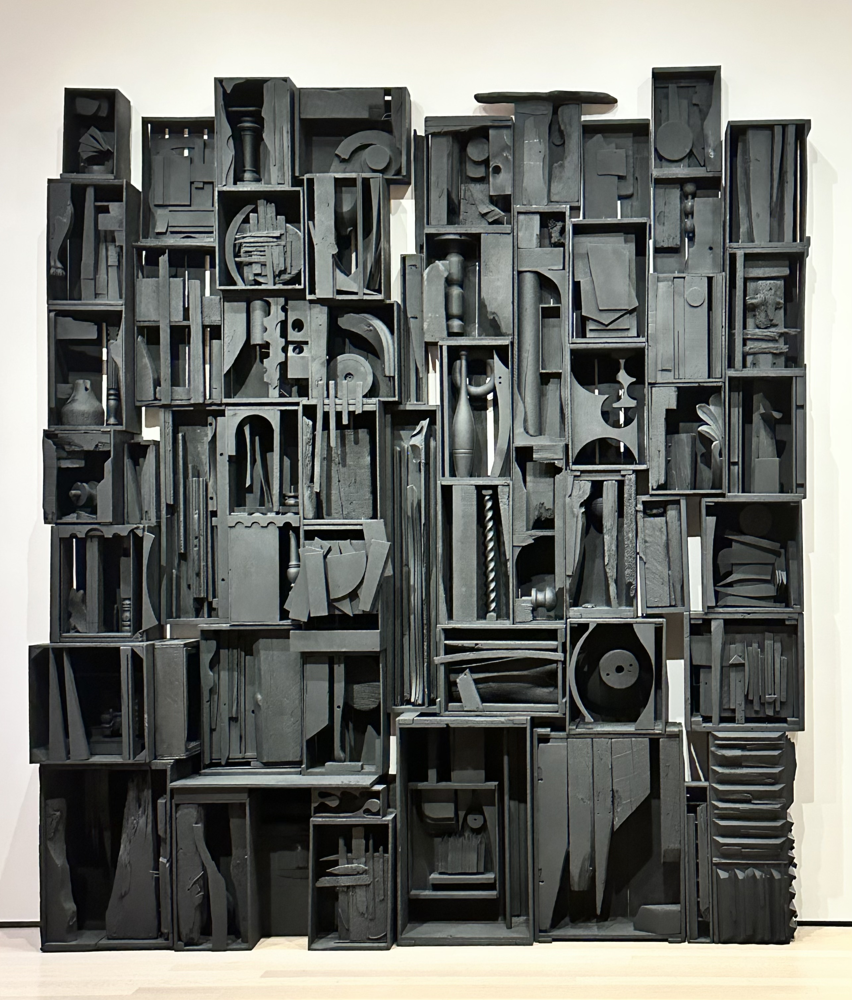 Louise NevelsonAmerican, born Ukraine. 1899-1988 Sky Cathedral 1958 Painted wood Gift of Mr. and Mrs. Ben Mildwoff, 1958 |
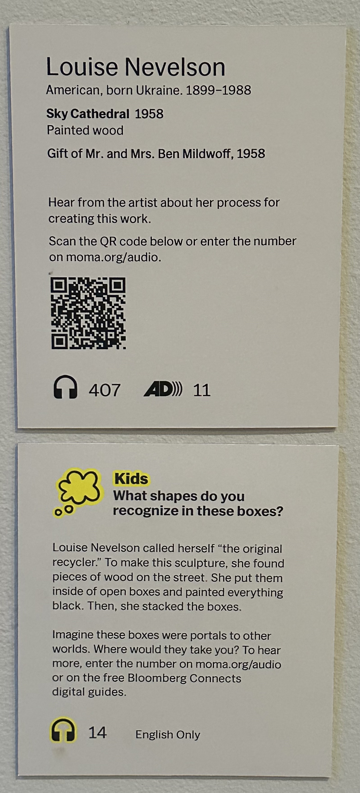 |
You've finished touring the fourth floor. Now, are you ready for the last and final floor?